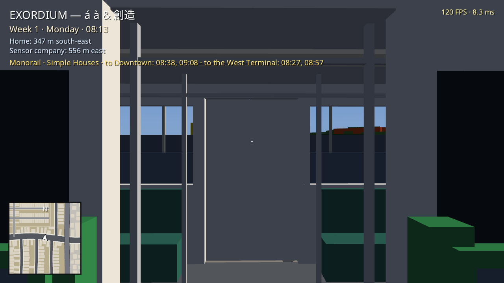
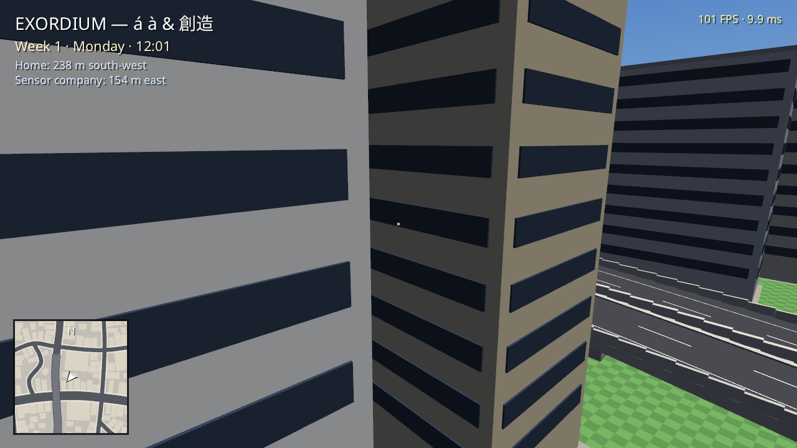
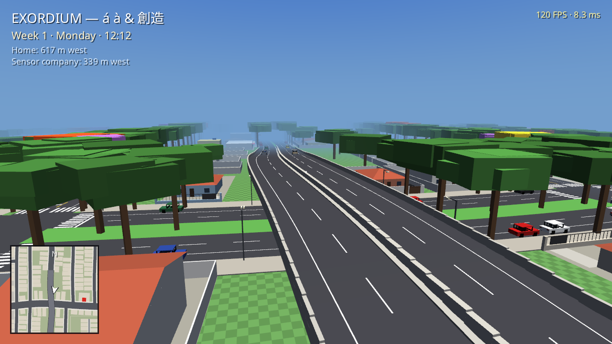
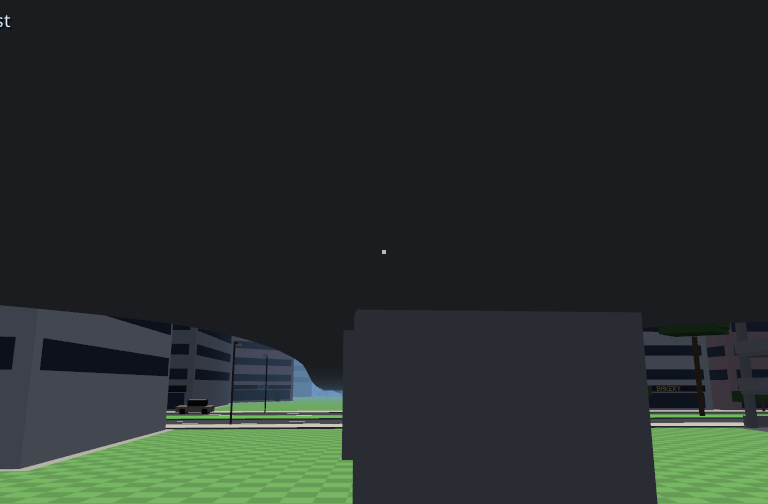
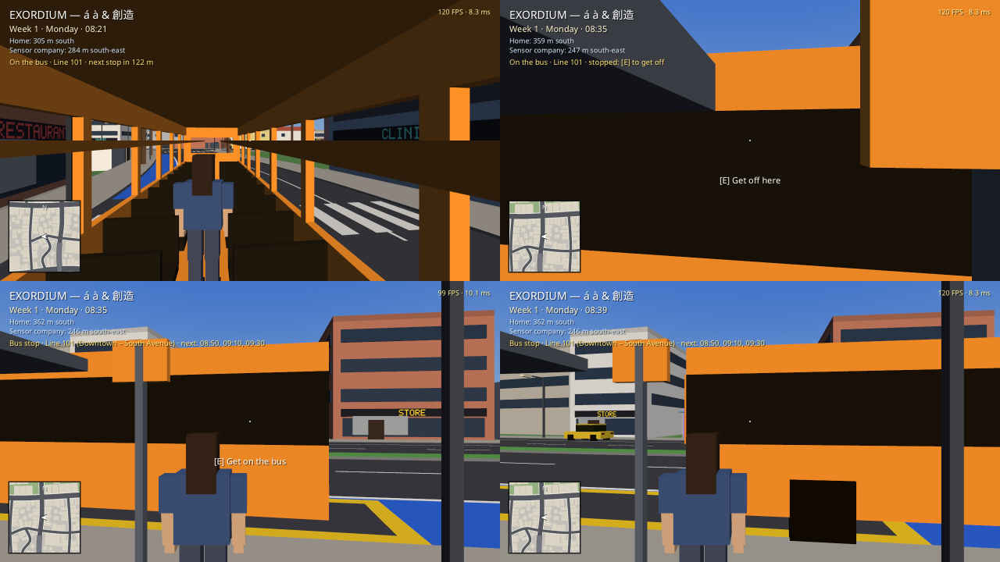
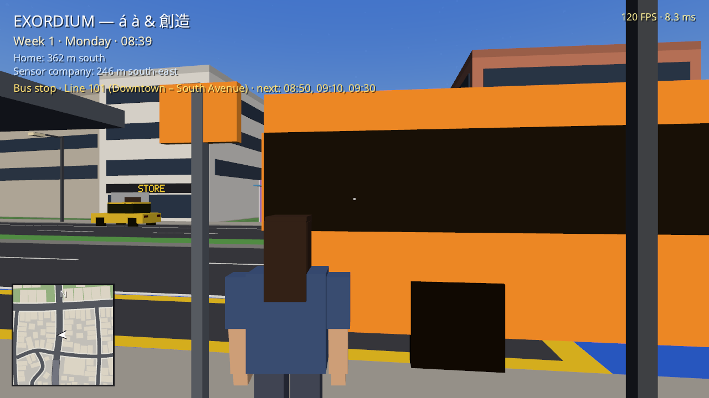
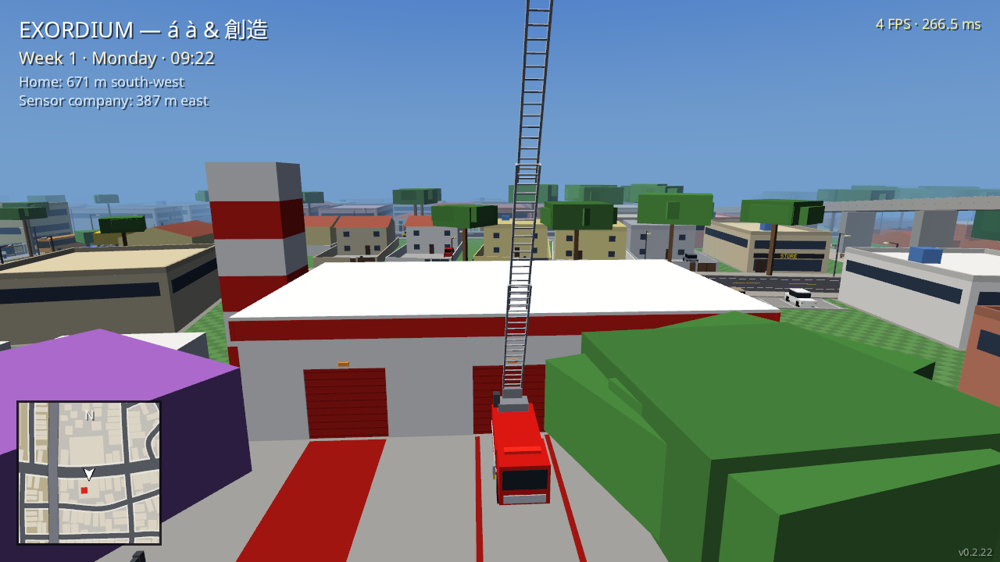
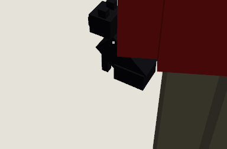
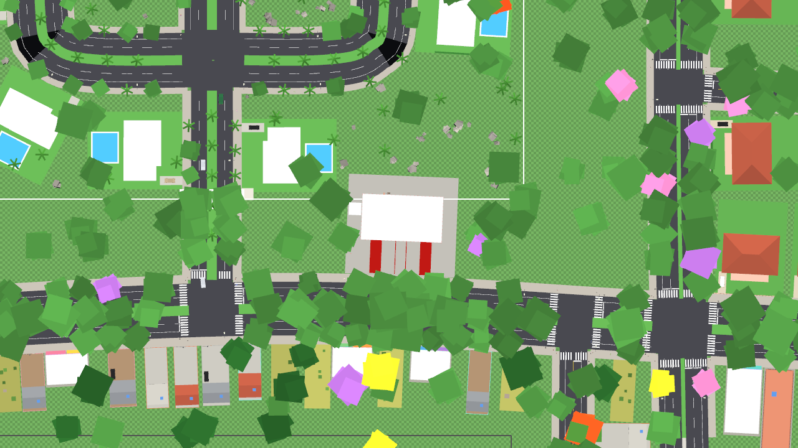

Urban Mobility & Vehicle Fleet
Every vehicle in SPRF serves an actual logistical function in the city. Automated suspended monorail trains, scheduled bus lines with physical timetable totems, turntable ladder fire trucks, car dealerships, and five-story municipal parking garages.
The Suspended Monorail (SkyTrain)
Trains run suspended beneath concrete guideways supported by T-pillars along the central reservation of Main Avenue. Carriages are white with yellow-gold and green stripes, linking the core districts of the metropolis.

Platform Screen Doors
Waist-high automated glass screen doors synchronize with train arrivals. Trains wait for passenger boarding and prevent accidental track falls.

Elevated Track & Loop Route
A 2,796m aerial loop with balloon return turnarounds. A complete city circuit takes 137 in-game minutes with 35-minute headways in both directions.

15.5m Viaduct Overpass
When crossing highway viaducts, the concrete guideway climbs gentle ramps up to 10%, soaring nearly 5 meters above highway traffic rushing below!

"The monorail is 100% automated by the central city computer. Since no municipal employee works more than 5 days a week, staffing drivers for four trains running from 05:00 AM to midnight would require impossible shift rotations. It only stops if the electrical grid goes down — and with the unexplained power surges and voltage dropouts hitting the city feeders lately, that's the only thing that keeps me up at night!"
The Bus Network & The Blue Transit Lane
The Bus Network in Action: From Stop Totems to Vital Hubs

1. Timetable on the Stop Totem
At each sidewalk stop, the metal totem displays scheduled departures for the day (e.g. Line 101 at 08:50, 09:10, 09:30). If you miss one, simply check the sign for the next trip.
2. Curbside Boarding
The bus pulls up to the curb and opens its doors for passengers. Boarding is seamless and follows the natural rhythm of city life.
3. Live Passenger Cabin Ride
Inside the cabin with yellow handrails, you watch storefronts, pedestrians, and viaducts drift by through the windows as the bus progresses down the avenue.
4. Connecting Vital City Hubs
Routes bridge residential neighborhoods and the western suburbs with primary commercial towers, administrative buildings, and hospital centers.
The Three Canonical Lines
- Line 101 (Downtown – South Avenue): The transverse line connecting Southwest Terminal, City Hall downtown, Northeast Terminal, and South Avenue.
- Line 202 (Downtown – East): Serves middle-class residential neighborhoods and the eastern tip of the metropolis.
- Line 303 (Downtown – West / Workers): The player's vital lifeline! Passes just 45 meters from your rented home in the western suburbs and drops you right in front of the industrial sensor company downtown.
🚌 The 02:00 AM Curfew Rule
I defined a strict rule for the city: no bus may be running at 02:00 AM. The final service leaves at 01:00 AM to return to the depot, and service resumes only at 04:00 AM.

Urban Fleet & The Blue Lane
Buses feature authentic two-axle turning physics and turning radius. On arterial thoroughfares, the exclusive Blue Lane guarantees absolute transit priority for public buses and emergency vehicles.
"On Line 303, we don't play around with the time of people waking up early to work. Our buses run strictly on the schedule posted on the sidewalk totem. If a passenger misses the 08:21 AM departure, no need to despair: just check the timetable sign to see when the next car pulls up. Our route cuts across the entire city, links the outer suburbs to the main terminals, and drops everyone right at the office doors downtown!"
Fire Department & Canonical Mascot

Central Station's 23m Ladder
Only Central Station houses the massive Turntable Ladder truck. Every 4 hours, firefighters conduct live courtyard drills extending the rotating ladder into the open air.

Sombra the Green-Eyed Black Cat
My golden rule for every station in the city: each of the 4 firehouses has its own standing black cat walking with charming flip-book animations through the locker room bays!

Aerial Basket Bucket Trucks
Stationed at North Station (mansion district) and East Station to clear hazardous tree branches and smoke out aggressive wasp swarms nesting in 18-meter canopies.
Purchasing Cars and Bicycles
As you save up money from jobs, visit dealerships seamlessly integrated into the city map without loading screens: